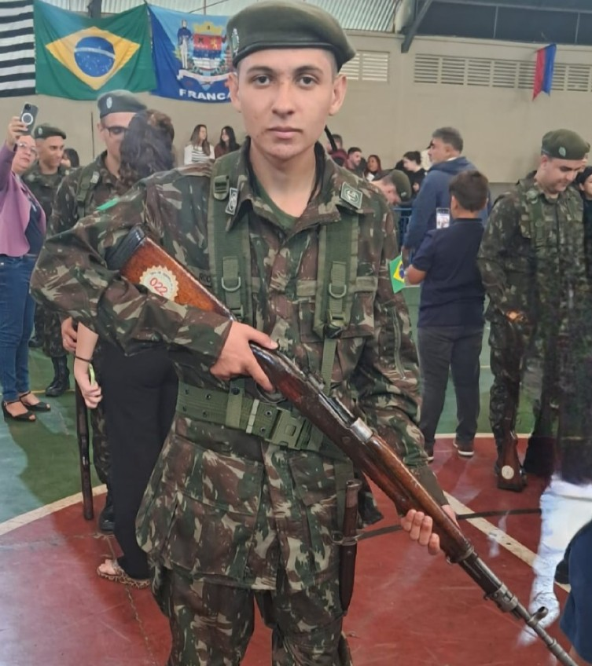

Atualmente as atividades que eu considero destaque são meus estudos na fatec, estagio na Unesp, e minha função como monitor no Tiro de Guerra 02-013
Acredito que algumas de minhas habilidades é a disposição para aprender, inglês bom, facilidade no geral em aprender, e boa comunicação.
Trabalhei por um tempo na fábrica de sapatos do meu tio, na qual eu fazia um pouco de tudo,desde passar cola, separarformas, montar caixas, tirar o excesso de cola que sobra na hora que seca, pregar palmilha. até as buchas( papel que fica dentro do calçado depois de pronto). Mas Atualmente estou como estagiario na Unesp, mexendo com Manutenção de computadores, dou suporte com impressoras, celulares e outros aparelhos no geral
Alguns conhecimentos são python, na qual aprendi a lógica de programação, java, na qual vi programação orientada a objetos, e tecnicas de programação, javascript(node), html, css ambos usados no desenvolvimento web. Banco de dados SQL e NOSQL(mongodb). Golang, estudo à parte, sendo estudado por conta propria, comecei a ver o começo da linguagem (sintaxe). E agora no 4° semestre estou vendo mobile, com react native e IOT